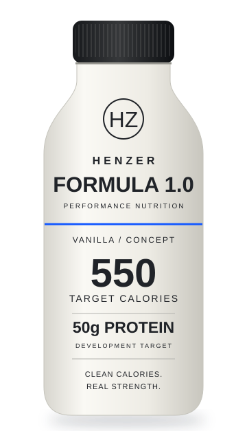

High calories
Designed for athletes who struggle to consume enough calories.
HENZER FOUNDING PERFORMANCE PARTNERS
Help shape the future of athlete nutrition.
Henzer is selecting a limited group of collegiate athletic programs and performance organizations to help shape Formula 1.0 before production begins.
No purchase required. Built around your athletes.

01 / THE OPPORTUNITY
Athletes with high calorie needs often rely on powders, large meals, or high-sugar products. Most ready-to-drink protein shakes focus on low-calorie supplementation. Formula 1.0 is being developed to bridge that gap.
Designed for athletes who struggle to consume enough calories.
Performance-focused protein intake in a convenient ready-to-drink format.
A cleaner approach to traditional high-sugar mass gainers.
02 / FORMULA 1.0
Formula 1.0 is being developed as a convenient, nutrient-dense ready-to-drink option for athletes focused on performance, recovery, and healthy weight gain.
TARGET CALORIES
TARGET PROTEIN
TARGET ADDED SUGAR
FORTIFICATION GOAL
Nutrition targets shown are development goals and may change during formulation and testing.
03 / THE PARTNERSHIP
Founding partners will help Henzer understand what athletes and performance professionals actually need before the product is finalized.
Be among the first organizations invited to evaluate Formula 1.0.
Selected partners will receive pilot samples when available.
Help shape calories, flavor, texture, protein content, and athlete preferences.
Preferred introductory pricing when commercial production begins.
Priority access to early production runs, subject to availability.
Optional recognition in future Henzer materials, subject to your organization’s approval.
Program benefits are planned and depend on formulation progress, sample availability, and future production.
04 / WHO SHOULD APPLY?
We’re looking for people and organizations working at the intersection of nutrition, performance, and athlete development.
05 / DEVELOPMENT ROADMAP
Where we are: pre-launch, with partner outreach underway. Your input helps inform what comes next.
Underway
Currently recruiting
Food science & formulation
Small-scale samples
Feedback & refinement
Future production & distribution
WHY HENZER
Better nutrition starts with better conversations.
06 / LET’S BUILD TOGETHER
Apply to become a Founding Performance Partner.
We're currently speaking with a limited number of athletic programs and performance organizations as Formula 1.0 moves through development.
Your experience can help shape what’s next.
No purchase or financial commitment required.
07 / A FEW DETAILS
No. Applying does not require a purchase or financial commitment.
Not yet. Formula 1.0 is currently in development.
Selected partners may be invited to provide feedback, participate in short conversations, and evaluate pilot samples when available.
Henzer plans to provide complimentary samples to selected founding partners during pilot testing, subject to availability.
No. Participation does not imply endorsement unless separately agreed to in writing.
THE FUTURE IS A TEAM EFFORT.
More calories. More convenience. A cleaner approach.
Built around the athletes you support.